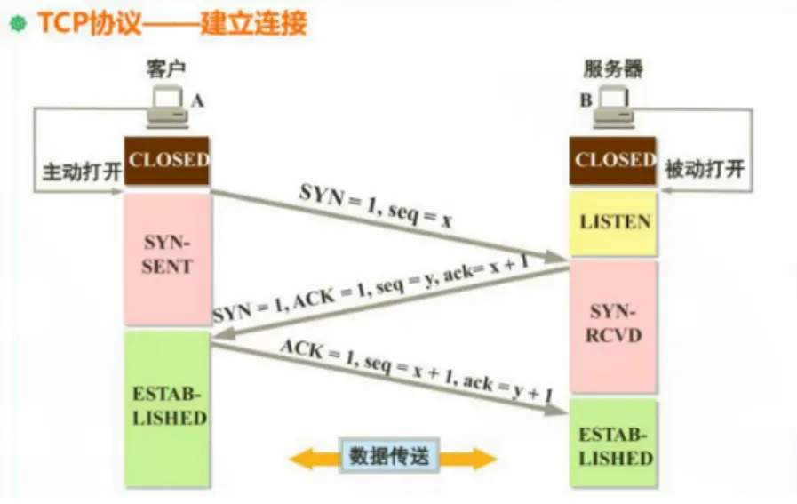

网络编程
网络编程的主线基本是：
两个进程之间，如何通过网络互相发送数据。
其中，不同层次分别负责：
- IP + Port 负责找到想要通信的进程。
- TCP/UDP 负责怎么传数据。
- HTTP 规定 Web 请求和响应的格式。
- Web 框架负责把 HTTP 请求映射到代码里的 handler。
速览
| 概念 | 作用 | 备注 |
|---|---|---|
| IP | 定位网络中的主机 | IP 解决“发给哪台机器”的问题 |
| 端口 | 定位主机上的进程 | 端口解决“发给哪个程序”的问题 |
| Socket | 网络通信端点 | Socket 通常由 IP、端口、协议组成 |
| TCP | 可靠的字节流协议 | 保证顺序、可靠传输，适合 HTTP |
| UDP | 不可靠的数据报协议 | 延迟低，但不保证到达和顺序 |
| DNS | 域名解析 | 把域名转换成 IP 地址 |
| HTTP | 应用层协议 | Web 客户端和服务端约定的请求/响应格式 |
| JSON | 数据交换格式 | Web API 最常见的结构化数据格式 |
| REST | API 设计风格 | 用 URL 表示资源，用 HTTP 方法表示操作 |
| Cookie/Session/Token | 用户身份识别 | Cookie 是浏览器机制，Session 是服务端状态，Token 是客户端携带的认证凭证 |
| WebSocket | 长连接双向通信 | 适合聊天、实时推送、协作编辑 |
IP 地址
IP 地址用来标识网络中的一台主机。
略
端口
端口用来区分不同进程，常见端口：
| 端口 | 常见用途 |
|---|---|
| 22 | SSH |
| 53 | DNS |
| 80 | HTTP |
| 443 | HTTPS |
| 3000 | 前端或后端开发服务常用 |
| 5432 | PostgreSQL |
| 6379 | Redis |
| 8080 | Web 服务开发常用 |
Socket
Socket 套接字是对网络链接的抽象，IP:Port 组成一个端点，Socket 基于两个端点抽象出连接。
可以理解为：
Socket = (ip1:port1 <-> ip2:port2)
服务端基本流程
服务端网络编程常见流程：
bind：绑定 IP 和端口。listen：开始监听连接。accept：接受客户端连接。read/write：读写数据。close：关闭连接。
Rust 标准库里的 TCP 服务端大概长这样：
use std::io::{Read, Write};
use std::net::TcpListener;
fn main() -> std::io::Result<()> {
// 绑定、监听（这里绑定即监听）一个 TCP 端口
let listener = TcpListener::bind("127.0.0.1:3000")?;
// incoming 是一个返回一个阻塞迭代器，这意味着它会循环等待新连接，而迭代器里的元素是每个新连接的 TcpStream，准确来说是 Result<TcpStream, Error>
// TcpStream 就是一个套接字端点，用来表示一个连接,它实现了 Read 和 Write trait，核心能力就是读写数据
for stream in listener.incoming() {
let mut stream = stream?;
let mut buf = [0; 1024];
let n = stream.read(&mut buf)?;
println!("收到 {} 字节", n);
stream.write_all(b"hello")?;
}
Ok(())
}TCP
TCP 是可靠的、面向连接的、基于字节流的传输层协议。
它的特点：
- 需要建立连接。
- 保证数据可靠到达。
- 保证数据顺序。
- 有重传机制。
- 有流量控制和拥塞控制。
- 数据是字节流，没有天然消息边界。
连接三次握手
TCP 建立连接要经过三次握手：
- 客户端发送
SYN，表示想建立连接。 - 服务端回复
SYN + ACK，表示同意连接。 - 客户端回复
ACK，连接建立完成。
可以简单理解成：
客户端：我能连你吗（SYN）？
服务端：可以（ACK），我也能连你吗（SYN）？
客户端：可以（ACK），开始通信。

结束四次挥手
TCP 关闭连接通常需要四次挥手：
- 一方发送
FIN，表示自己没有数据要发了。 - 另一方回复
ACK。 - 另一方也发送
FIN，表示自己也没有数据要发了。 - 最初一方回复
ACK，连接关闭。
为什么不是一次直接关？因为 TCP 是双向通信，一方不发了，不代表另一方也发完了。
流量控制和拥塞控制
流量控制
流量控制解决的是：发送方发得太快，接收方来不及处理 的问题。
TCP 通过滑动窗口来实现流量控制。接收方会告诉发送方自己当前还能接收多少数据，这个值叫做接收窗口。
可以简单理解为：
- 接收方缓存满了，就告诉发送方“先慢点发”。
- 接收方缓存空出来了，再告诉发送方“可以多发一点”。
这样可以避免发送方把接收方的缓冲区挤爆。
拥塞控制
拥塞控制解决的是：网络太拥挤，大家都发得太多 的问题。
即使接收方还能处理，如果网络中路由器、链路负载太高，也可能造成大量丢包和重传。TCP 通过拥塞控制来动态调整发送速率。
常见的做法包括：
- 慢启动：一开始发送得少，之后逐步增加。
- 拥塞避免：当接近网络承载能力时，放慢增长速度。
- 快速重传：收到三次重复 ACK，认为某个包丢了，尽快重传。
- 快速恢复：丢包后不要一下子降得太狠，而是降为原先的一半，跳过慢启动，尽快恢复传输。
TCP 会同时参考接收窗口和拥塞窗口：
- 接收窗口：接收方能接多少。
- 拥塞窗口：网络当前能承受多少。
最终实际发送量取两者的较小值。
字节流
TCP 是字节流，不保留消息边界。
比如发送方连续发送：
hello
world
接收方可能一次读到：
helloworld
也可能分多次读到：
hel
lowor
ld
所以协议层需要自己规定消息边界。HTTP 通过 header、Content-Length、chunked 编码等方式解决这个问题。
UDP
UDP 是不可靠的、无连接的、基于数据报的传输层协议。
特点：
- 不需要建立连接。
- 不保证送达。
- 不保证顺序。
- 不保证不重复。
- 开销小，延迟低。
- 保留消息边界：
#![allow(unused)]
fn main() {
// 发送方发三条消息
let soket = UdpSocket::bind("127.0.0.1:0")?;
let addr = "127.0.0.1:3000";
socket.send_to(b"hello", addr)?;
socket.send_to(b"world", addr)?;
socket.send_to(b"!"， addr)?;
// 接收方必需要三次 recv_from 才能收到三条消息
let mut socket = UdpSocket::bind("127.0.0.1:3000")?;
let mut buf = [0; 1024];
// 接受到的消息顺序不保证，但每条消息都必需是完整的
let (n, addr) = socket.recv_from(&mut buf)?;
let (n, addr) = socket.recv_from(&mut buf)?;
let (n, addr) = socket.recv_from(&mut buf)?;
}TCP 和 UDP 对比：
| 特性 | TCP | UDP |
|---|---|---|
| 是否连接 | 面向连接 | 无连接 |
| 可靠性 | 可靠 | 不可靠 |
| 顺序 | 保证顺序 | 不保证顺序 |
| 边界 | 字节流，无消息边界 | 数据报，有消息边界 |
| 延迟 | 相对高 | 相对低 |
| 常见场景 | HTTP、数据库连接 | DNS、音视频、游戏 |
DNS
DNS 用来把域名解析成 IP 地址：
- 浏览器检查缓存。
- 操作系统检查缓存。
- 查询本地 DNS 服务器。
- 本地 DNS 服务器递归查询又一级 DNS 服务器，或者本机迭代查询根 DNS、顶级域 DNS、权威 DNS。
- 拿到 IP。
- 根据 IP 建立 TCP 连接。
HTTP
HTTP 是应用层协议，采用请求/响应模型。
客户端发送 request，服务端返回 response：
Client -- HTTP Request --> Server
Client <-- HTTP Response -- Server
HTTP 通常运行在 TCP 之上。HTTPS 则是在 HTTP 和 TCP 之间加了一层 TLS 加密。
HTTP 请求
一个 HTTP 请求大致包括：
GET /users/1 HTTP/1.1
Host: example.com
User-Agent: curl/8.0
Accept: application/json
如果是 POST JSON，请求可能是：
POST /users HTTP/1.1
Host: example.com
Content-Type: application/json
Content-Length: 31
{"name":"Alice","age":18}
组成部分：
- 请求方法：
GET、POST等。 - 路径：
/users/1。 - 协议版本：
HTTP/1.1。 - 请求头：例如
Content-Type。 - 请求体：例如 JSON 数据。
HTTP 响应
一个 HTTP 响应大致包括：
GET /users/1 HTTP/1.1
Host: example.com
User-Agent: curl/8.0
Accept: application/json
如果是 POST JSON，请求可能是：
POST /users HTTP/1.1
Host: example.com
Content-Type: application/json
Content-Length: 25
{"name":"Alice","age":18}
Content-Type: application/json
Content-Length: 23
{"id":1,"name":"Alice"}
组成部分：
- 状态码：
200、404、500等。 - 响应头：例如
Content-Type。 - 响应体：例如 JSON、HTML、图片等。
HTTP 方法
常见方法：
| 方法 | 含义 | 示例 |
|---|---|---|
| GET | 获取资源 | GET /users/1 |
| POST | 创建资源或提交数据 | POST /users |
| PUT | 整体更新资源 | PUT /users/1 |
| PATCH | 部分更新资源 | PATCH /users/1 |
| DELETE | 删除资源 | DELETE /users/1 |
| OPTIONS | 查询服务器支持的能力 | CORS 预检请求常用 |
幂等性
幂等表示同一个请求执行多次，结果和执行一次一样。
常见理解：
GET幂等：查一次和查多次不应该改变资源。PUT幂等：把用户改成同一份数据，多次执行结果一样。DELETE通常认为幂等：删一次和删多次，最终都是资源不存在。POST通常不幂等：重复提交可能创建多个资源。
HTTP 状态码
状态码表示响应结果。
| 范围 | 含义 |
|---|---|
| 1xx | 信息响应 |
| 2xx | 成功 |
| 3xx | 重定向 |
| 4xx | 客户端错误 |
| 5xx | 服务端错误 |
常见状态码：
| 状态码 | 含义 | 常见场景 |
|---|---|---|
| 200 | OK | 请求成功 |
| 201 | Created | 创建资源成功 |
| 204 | No Content | 成功但没有响应体 |
| 301 | Moved Permanently | 永久重定向 |
| 302 | Found | 临时重定向 |
| 400 | Bad Request | 请求参数错误 |
| 401 | Unauthorized | 未登录或 token 无效 |
| 403 | Forbidden | 没有权限 |
| 404 | Not Found | 资源不存在 |
| 409 | Conflict | 资源冲突，例如重复创建 |
| 422 | Unprocessable Entity | 参数格式对，但语义校验失败 |
| 500 | Internal Server Error | 服务端内部错误 |
| 502 | Bad Gateway | 网关收到上游错误 |
| 503 | Service Unavailable | 服务暂时不可用 |
Header
Header 用来传递请求或响应的元信息。
常见请求头：
| Header | 用途 |
|---|---|
| Host | 目标主机 |
| User-Agent | 客户端信息 |
| Accept | 客户端希望接收的数据格式 |
| Content-Type | 请求体格式 |
| Authorization | 认证信息 |
| Cookie | 浏览器携带的 cookie |
常见响应头：
| Header | 用途 |
|---|---|
| Content-Type | 响应体格式 |
| Content-Length | 响应体长度 |
| Set-Cookie | 服务端设置 cookie |
| Location | 重定向地址 |
| Cache-Control | 缓存控制 |
常见 Content-Type：
application/json
text/html
text/plain
application/x-www-form-urlencoded
multipart/form-data
Body
Body 是请求或响应的主体数据。
常见 body 类型：
- JSON。
- HTML。
- 普通文本。
- 表单。
- 文件。
- 二进制数据。
GET 请求通常没有 body，参数常放在 query string：
GET /users?page=1&page_size=20
POST/PUT/PATCH 常用 body 传数据：
{
"name": "Alice",
"age": 18
}
REST API
REST 是一种常见的 Web API 设计风格。核心思想是：
用 URL 表示资源，用 HTTP 方法表示动作。
例如用户资源：
| 操作 | API |
|---|---|
| 查询用户列表 | GET /users |
| 查询单个用户 | GET /users/{id} |
| 创建用户 | POST /users |
| 整体更新用户 | PUT /users/{id} |
| 部分更新用户 | PATCH /users/{id} |
| 删除用户 | DELETE /users/{id} |
不太推荐：
GET /getUser?id=1
POST /deleteUser
更推荐：
GET /users/1
DELETE /users/1
JSON
JSON 是 Web API 中最常用的数据交换格式。
请求 JSON：
{
"username": "alice",
"password": "secret"
}
响应 JSON：
{
"id": 1,
"username": "alice",
"created_at": "2026-05-05T12:00:00Z"
}
Rust 中通常用 serde 和 serde_json 处理 JSON：
#![allow(unused)]
fn main() {
use serde::{Deserialize, Serialize};
#[derive(Debug, Deserialize)]
struct CreateUserRequest {
username: String,
password: String,
}
#[derive(Debug, Serialize)]
struct UserResponse {
id: u64,
username: String,
}
}Cookie、Session、Token
Web 里经常要识别“当前用户是谁”。
Cookie
Cookie 是浏览器保存的小段数据，会在请求时自动带给同一个站点。
服务端设置 cookie：
Set-Cookie: session_id=abc123; HttpOnly; Secure
浏览器之后请求会带上：
Cookie: session_id=abc123
Session
Session 通常是服务端保存的登录状态。浏览器只保存一个 session_id，真正的用户信息在服务端。
流程：
- 用户登录。
- 服务端生成
session_id。 - 服务端把
session_id放进 cookie。 - 浏览器后续请求自动带 cookie。
- 服务端根据
session_id找到用户状态。
Token
Token 通常由客户端保存，然后放在请求头里：
Authorization: Bearer <token>
JWT 是常见 token 格式之一。
对比：
| 方式 | 状态保存在哪里 | 常见特点 |
|---|---|---|
| Cookie + Session | 服务端 | 易控制、可主动失效 |
| Token/JWT | 客户端为主 | 适合前后端分离和多端，但失效控制更复杂 |
CORS
CORS 是浏览器的跨域资源共享机制。它不是服务端之间的限制，而是浏览器为了安全加的一层限制。
只要协议、域名、端口有一个不同，就算跨域：
http://localhost:3000
http://localhost:8080
这两个端口不同，所以跨域。
常见 CORS 响应头：
Access-Control-Allow-Origin: http://localhost:3000
Access-Control-Allow-Methods: GET, POST, PUT, DELETE
Access-Control-Allow-Headers: Content-Type, Authorization
预检请求
浏览器在某些跨域请求前，会先发一个 OPTIONS 请求，确认服务端是否允许。
例如前端想发：
POST /users
Content-Type: application/json
Authorization: Bearer xxx
浏览器可能先发：
OPTIONS /users
Access-Control-Request-Method: POST
Access-Control-Request-Headers: content-type, authorization
服务端允许后，浏览器才会发送真正的 POST 请求。
WebSocket
HTTP 是请求/响应模型，客户端发一次请求，服务端回一次响应。
WebSocket 是长连接双向通信。连接建立后，客户端和服务端都可以主动发送消息。
适合场景：
- 聊天室。
- 实时通知。
- 在线协作。
- 实时游戏状态。
- 股票价格推送。
简单对比：
| 特性 | HTTP | WebSocket |
|---|---|---|
| 通信模型 | 请求/响应 | 双向长连接 |
| 服务端主动推送 | 不方便 | 适合 |
| 常见场景 | API、网页、文件 | 聊天、实时通知 |
HTTPS 和 TLS
HTTPS = HTTP + TLS
TLS 提供：
- 加密：防止内容被窃听。
- 完整性：防止内容被篡改。
- 身份认证：通过证书确认服务器身份。
为什么需要 HTTPS：
- 登录密码不能明文传输。
- token、cookie 不能被轻易窃听。
- 防止中间人攻击。
从 HTTP 到 Web 框架
如果不用框架，写一个完整 HTTP 服务要处理很多事情：
- 监听端口。
- 接受 TCP 连接。
- 解析 HTTP 请求行、header、body。
- 根据 method 和 path 找到处理逻辑。
- 解析 query、path 参数、JSON body。
- 执行业务逻辑。
- 构造 HTTP 响应。
- 处理错误。
- 记录日志。
- 做鉴权、CORS、超时、限流等中间件。
Web 框架就是把这些重复工作封装起来。
以 axum 为例，概念大致对应：
| HTTP/网络概念 | axum 里的概念 |
|---|---|
| URL path | route("/users/:id", ...) |
| HTTP method | get(...)、post(...)、delete(...) |
| 请求处理函数 | handler |
| JSON 请求体 | Json<T> |
| 路径参数 | Path<T> |
| 查询参数 | Query<T> |
| 共享状态 | State<T> |
| 请求处理链路 | middleware / tower layer |
| HTTP 响应 | IntoResponse |
所以学 axum 时不要只背 API，要知道它是在帮你处理 HTTP 服务端的常见流程。
一个请求的完整过程
以浏览器访问接口为例：
GET https://api.example.com/users/1
大致流程：
- 浏览器解析 URL，知道协议是 HTTPS，域名是
api.example.com，路径是/users/1。 - 浏览器通过 DNS 查询域名对应的 IP。
- 浏览器和服务端建立 TCP 连接。
- HTTPS 场景下进行 TLS 握手。
- 浏览器发送 HTTP 请求。
- 服务端接收请求，Web 框架解析 method、path、header、body。
- 路由匹配到对应 handler。
- handler 执行业务逻辑，可能访问数据库。
- 服务端构造 HTTP 响应。
- 浏览器收到响应，根据状态码、header、body 继续处理。